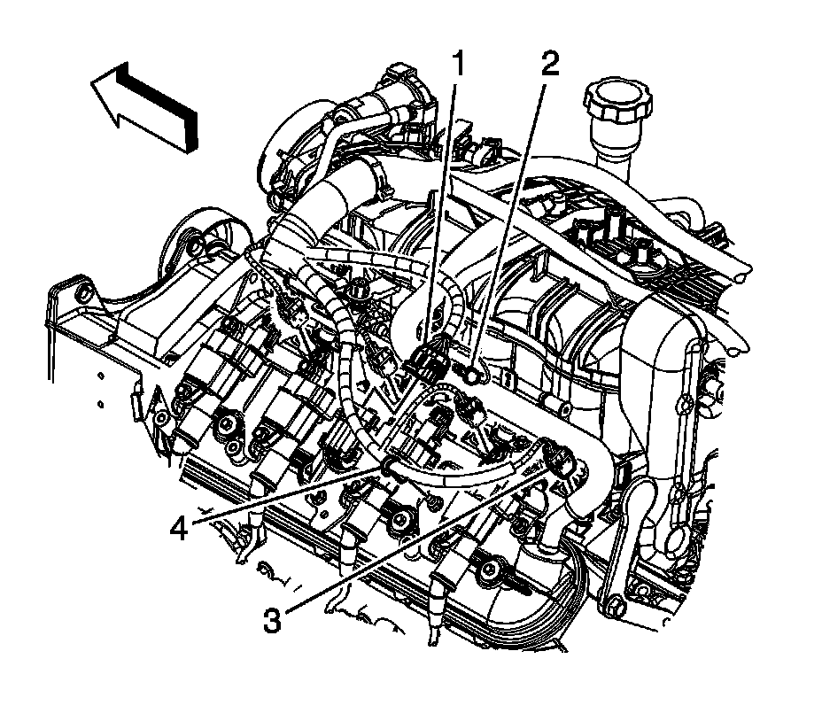
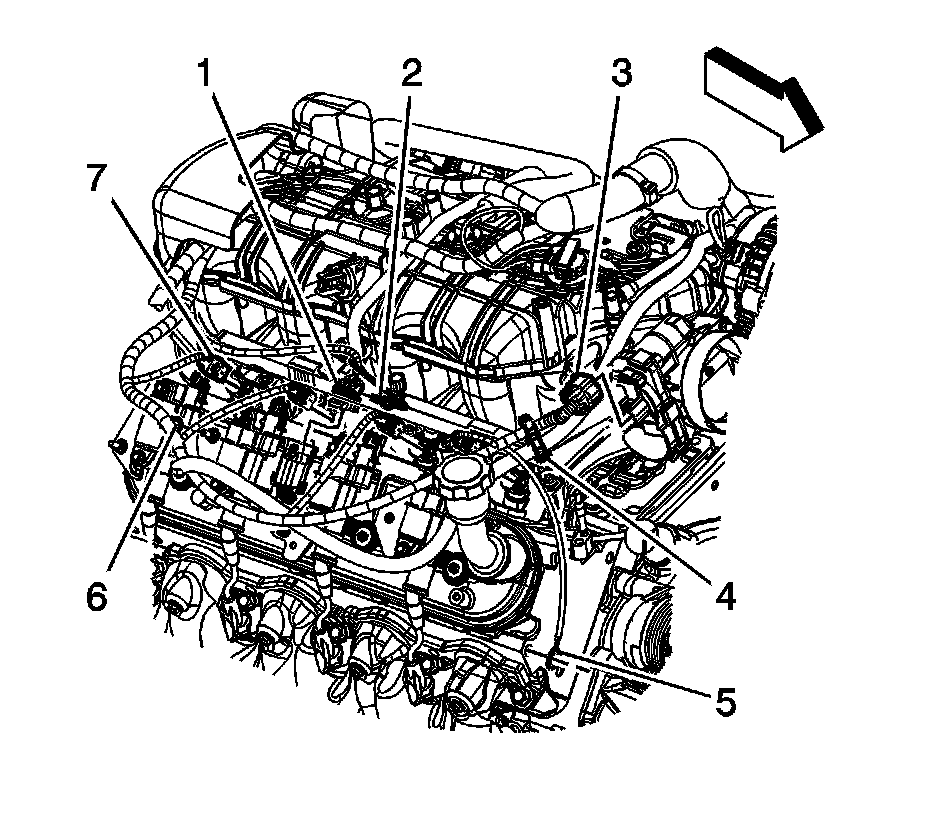
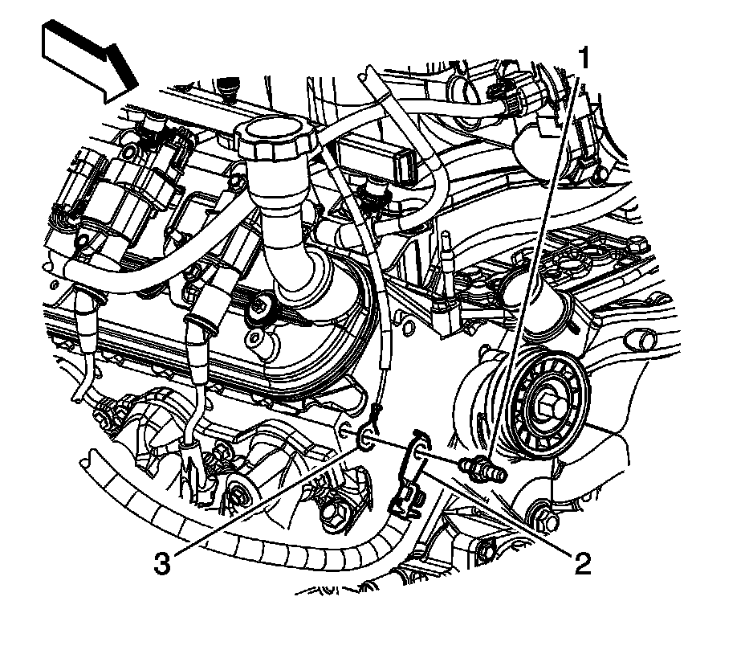
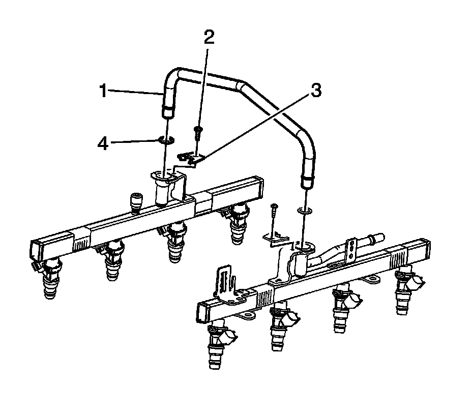

Fuel Injection Fuel Rail Crossover Tube Replacement
FUEL INJECTION FUEL RAIL CROSSOVER TUBE REPLACEMENT
REMOVAL PROCEDURE
IMPORTANT: An 8-digit identification number is located on the fuel rail. Refer to this identification number when servicing or when part replacement is required.

1. Remove the air cleaner outlet duct.
2. Relieve the fuel system pressure. Refer to Fuel Pressure Relief.
3. Remove the engine wiring harness bracket nut (1).
4. Disconnect the engine wiring harness electrical connector (2) from the evaporative emission (EVAP) purge solenoid.
5. Disconnect the engine wiring harness electrical connector (3) from the generator.
6. Disconnect the engine wiring harness electrical connector (4) from the manifold absolute pressure (MAP) sensor.

7. Remove the connector position assurance (CPA) retainer (2).
8. Disconnect the engine wiring harness electrical connector (1) from the ignition coil main electrical connector.
9. Disconnect the engine wiring harness electrical connectors (3) from the fuel injectors, perform the following:
1. Mark the connectors to their corresponding injectors to ensure correct reassembly.
2. Pull the CPA retainer on the connector up 1 click.
3. Push the tab on the connector in.
4. Disconnect the fuel injector electrical connector.

10. Remove the CPA retainer (2).
11. Disconnect the engine wiring harness electrical connector (1) from the ignition coil main electrical connector.
12. Disconnect the engine wiring harness electrical connector (3) from the electronic throttle control.
13. Disconnect the engine wiring harness electrical connectors (7) from the fuel injectors, perform the following:
1. Mark the connectors to their corresponding injectors to ensure correct reassembly.
2. Pull the CPA retainer on the connector up 1 click.
3. Push the tab on the connector in.
4. Disconnect the fuel injector electrical connector.
14. Remove the engine wiring harness clip (4) from the generator battery jumper cable.
15. Remove the engine wiring harness clip (6) from the ignition coil bracket stud.

16. Remove the negative battery cable stud (1) from the right cylinder head.
17. Remove the negative battery cable terminal (2) and engine wiring harness ground terminal (3) from the cylinder head.

18. Remove the engine wiring harness clip bolt (3) from the generator bracket.
19. Gather the branches of the engine wiring harness and reposition the aside.

20. Remove the fuel rail crossover pipe retainer screws (2).
21. Remove the fuel rail crossover pipe retainers (3).
22. Remove the fuel rail crossover pipe (1) from the fuel rails.
23. Remove and discard the fuel rail crossover pipe O-ring seals (4).
INSTALLATION PROCEDURE
1. Lubricate the NEW fuel rail crossover pipe O-ring seals with clean engine oil.
2. Install NEW fuel rail crossover pipe O-ring seals (4) onto the crossover pipe.
3. Install the fuel rail crossover pipe (1) into the fuel rails.
4. Install the fuel rail crossover pipe retainers (3).
5. NOTE: Refer to Fastener Notice.
Install the fuel rail crossover pipe retainer screws (2).
Tighten the screws to 3.8 N.m (34 lb in).
6. Gather the branches of the engine wiring harness and position over the top of the engine.
7. Position the engine wiring harness clip to the generator bracket and install the clip bolt (3).
Tighten the bolt to 9 N.m (80 lb in).
8. Position the negative battery cable terminal (2) and engine wiring harness ground terminal (3) to the right cylinder head.
9. Install the negative battery cable stud (1) to the cylinder head.
Tighten the stud to 25 N.m (18 lb ft).
10. Connect the engine wiring harness electrical connector (1) to the ignition coil main electrical connector.
11. Install the CPA retainer (2).
12. Connect the engine wiring harness electrical connector (3) to the electronic throttle control.
13. Connect the engine wiring harness electrical connectors (7) to the fuel injectors, perform the following:
1. Ensure that the CPA retainer is pulled out 1 click.
2. Connect the electrical connectors to their corresponding injectors.
3. Push the CPA retainer in 1 click.
4. Ensure that the connector is secured.
14. Install the engine wiring harness clip (4) to the generator battery jumper cable.
15. Install the engine wiring harness clip (6) to the ignition coil bracket stud.
16. Connect the engine wiring harness electrical connector (1) to the ignition coil main electrical connector.
17. Install the CPA retainer (2).
18. Connect the engine wiring harness electrical connectors (3) to the fuel injectors, perform the following:
1. Ensure that the CPA retainer is pulled out 1 click.
2. Connect the electrical connectors to their corresponding injectors.
3. Push the CPA retainer in 1 click.
4. Ensure that the connector is secured.
19. Connect the engine wiring harness electrical connector (4) to the MAP sensor.
20. Connect the engine wiring harness electrical connector (3) to the generator.
21. Connect the engine wiring harness electrical connector (2) to the EVAP purge solenoid.
22. Install the engine wiring harness bracket nut (1).
Tighten the nut to 5 N.m (44 lb in).
23. Connect the negative battery cable.
24. Use the following procedure in order to inspect for leaks:
1. Turn the ignition ON, with the engine OFF for 2 seconds.
2. Turn the ignition OFF for 10 seconds.
3. Turn the ignition ON, with the engine OFF.
4. Inspect for leaks.
25. Install the air cleaner outlet duct.